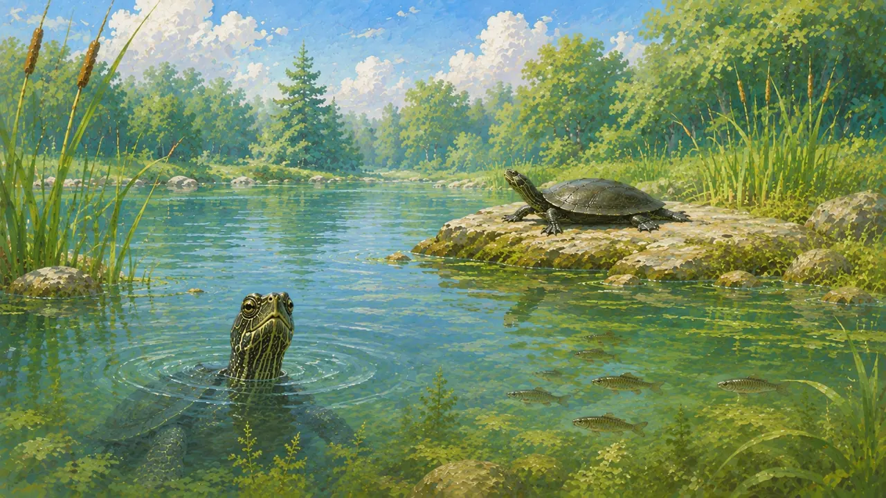

みずべ

水から 顔を 出して いる カメが いるよ。石の 上にも いるね。
ほんとうの はなし
石の 上の カメを 見てみて。手足を ひろげて 日なたぼっこ。
「カメの ふしぎ」で 見た 甲羅干し だね。

この カメの 足も 見て みよう。しめった 森で 見た 足と くらべて どうかな。
この 足の カメは、どこに いると おもう？
指の あいだに まくが あって、ひらたく ひろがって いたね。水を およぐ カメには、こういう 足が 多いよ。

かたちは ヒントの ひとつ。それだけでは わからない ことも あるよ。